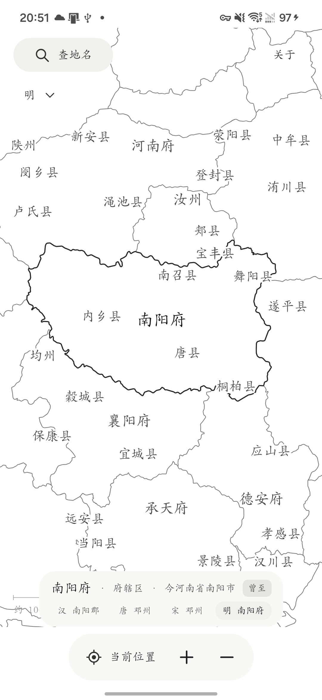
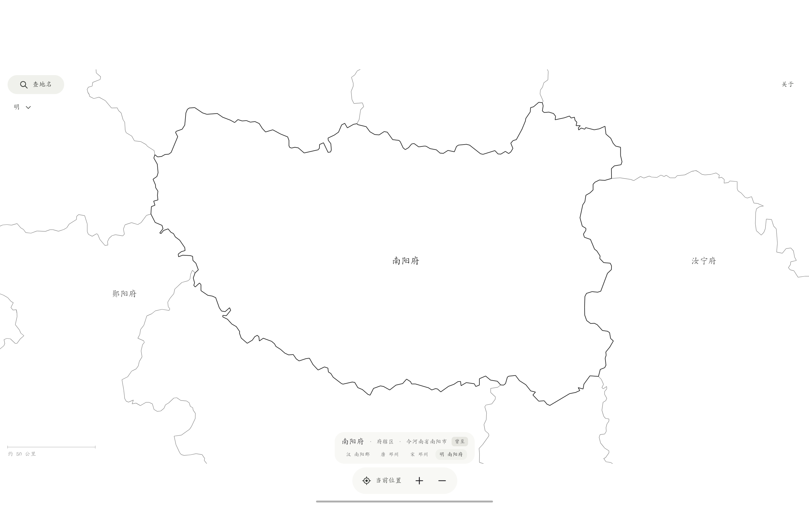
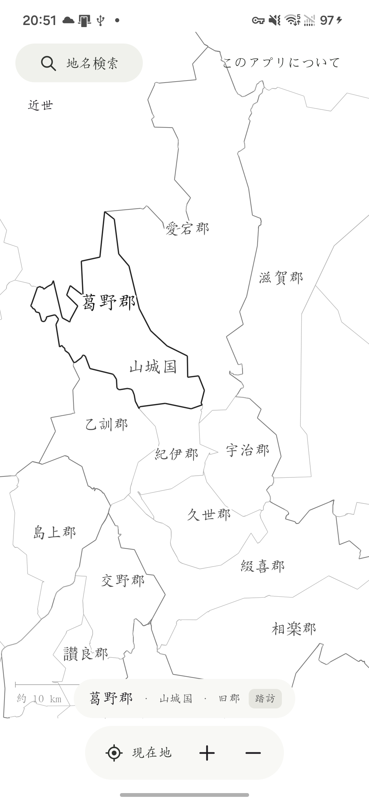
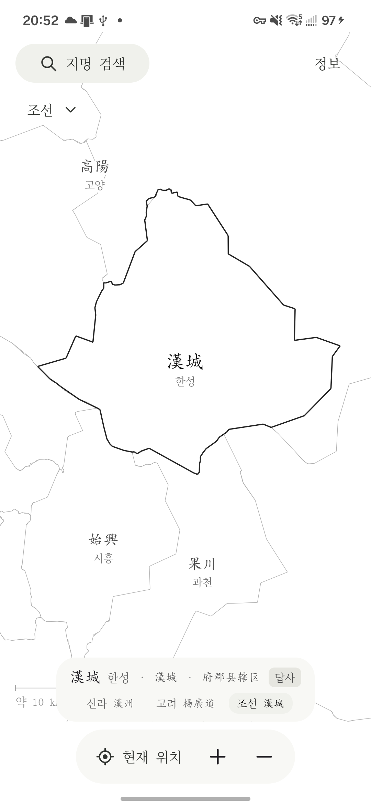
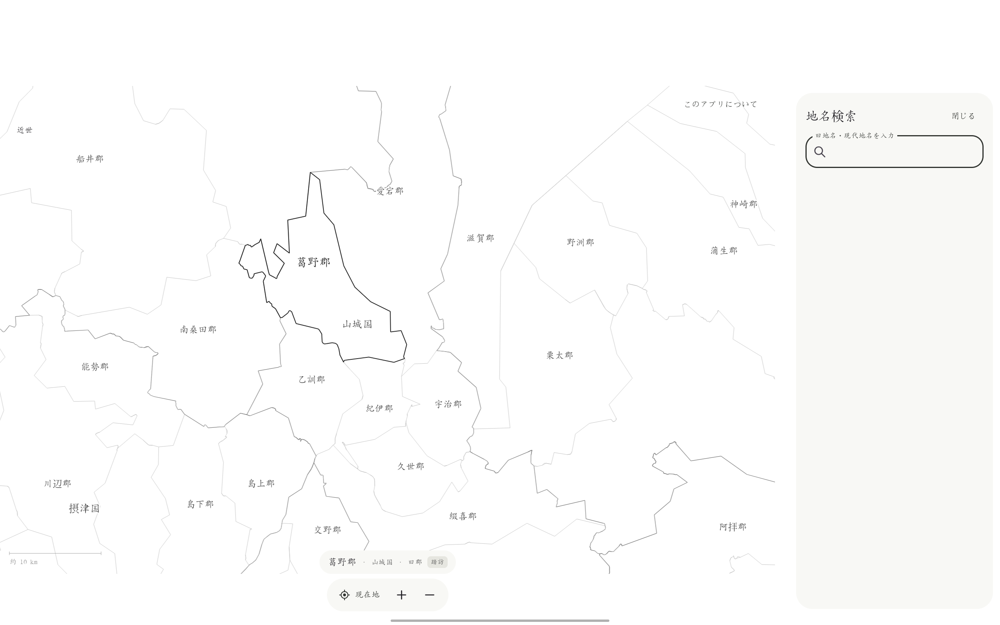

行至一处，展卷见旧时州县
此地是一份装在手机里的离线历史舆图。专为实地访古与旅途读史而设：无网络权限、无冗余弹窗，纯白宣纸底上只留有据可查的历代城池、治所与辖界。
01行旅与展卷
- 立处即古境：打开应用定位当前坐标，墨点之外随手机朝向浮现视线扇面；若立身于古治所之外，淡墨游丝虚线直引附近县治、府治或军卫驻地，并标明八风方位与里程。
- 一栏越千年：选中或定位一处，底部轻浮宣纸古今条，并列该坐标在汉、唐、宋、明（或新羅、高麗、朝鮮）的真实辖属；轻点任一朝代即可瞬切底图。
- 旧界相叠印：切换时代时，上一朝代所选州府的轮廓以淡赭墨虚线留驻于新界之下，千年间辖境的分合、盈缩一目了然。
- 朱印记踏访：亲历或考索过的古州县，可随手钤上一枚「曾至」朱文小印；图上地名旁点缀朱砂方印，检索面板亦支持一键汇总踏访足迹。
- 今名觅旧治：检索兼通古今。无论输入历史建置、繁简汉字、谚文、平假名读音（如「かどの」），抑或直接输入现代市县乡镇名（如「南京」「大同」「汉阳」），皆可直达对应时代的故城治所。
02界面与多语
界面随视野所在地区呈现对应纪年：中国设汉、唐、宋、明四朝，朝鲜半岛设新羅、高麗、朝鮮三代，日本固定展示近世国郡；越南地方资料尚待核验接入，详见资料约定。支持中、日、韩三语界面，手机与平板自适应排布。





03收录规模
| 资料层级 | 研究库总计 | 默认截面（明万历十三年 · 1585） |
|---|---|---|
| 汉、唐、宋郡州府辖界 | 103／307／313 | 随时代切换加载 |
| CHGIS 历代县级治所时序（含今地考证） | 10,522 | 1,401 |
| CHGIS 历代府级治所时序 | 5,226 | 4（辖界外独点补充） |
| CHGIS 历代府州辖界时序 | 3,830 | 227 |
| 明代永平府—辽东都司同源参考面 | 1582年基准 | 2 |
| 明代卫所驻城与大宁迁驻参考 | 376 | 354 |
| 日本近世令制国与旧郡（含假名读音） | 85 国、806 郡（源目） | 68 国、715 郡（1864年基准） |
| 新羅九州五小京／高麗五道两界八牧 | 757／1370年基准 | 9 州／8 上级（随时代加载） |
| 朝鮮八道与府郡县辖区（含沿革异名） | 1864年基准 | 9 道、334 府郡县 |